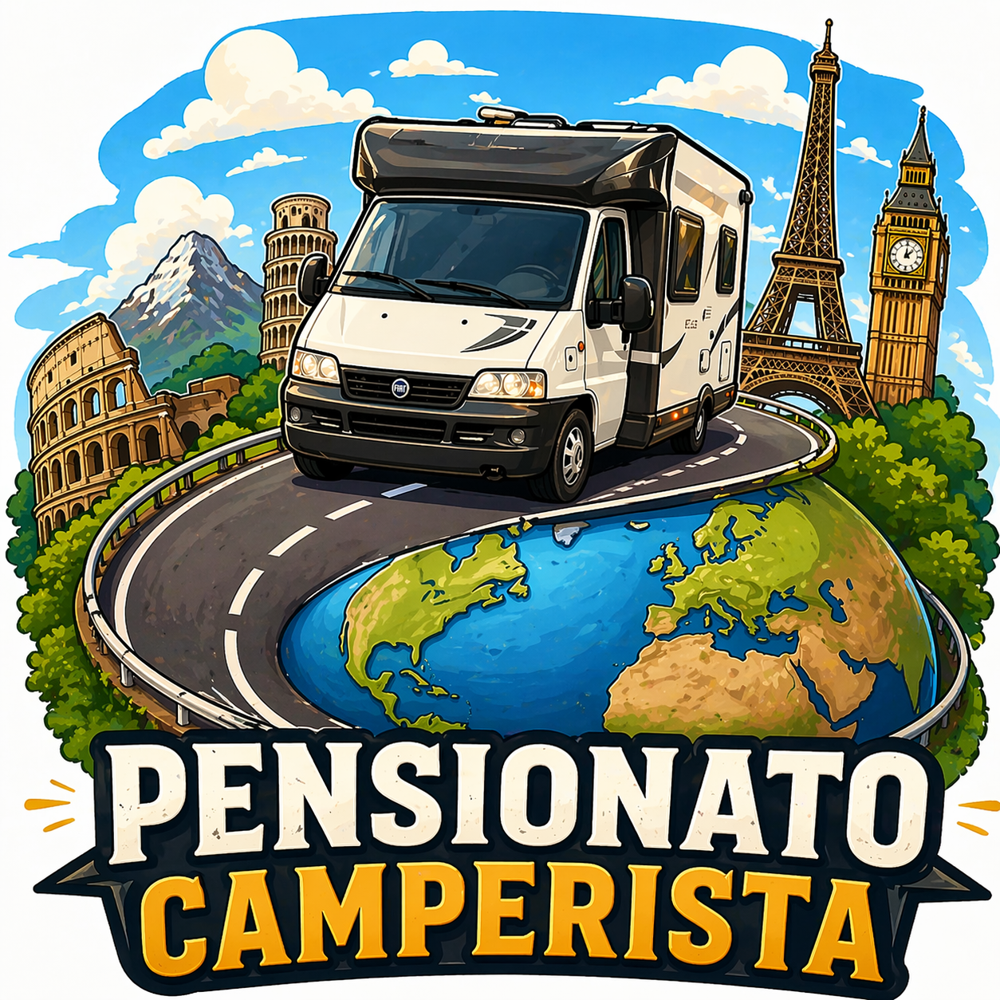

Aree sosta, campeggi e punti utili per viaggi in camper
"per pensionati e non...."

| Regione | Luogo / Area Sosta | Link | Note |
|---|---|---|---|
| PIEMONTE | Langhe | Apri | Viaggio nelle Langhe |
| PIEMONTE | Farigliano - Agriturismo Pianbosco | Apri |
Senza servizi Ristorante Sosta Gratis |
| PIEMONTE | Oasi Zegna | Apri | Area naturalistica |
| LIGURIA | Finale Ligure | Google Maps | Area sosta camper |
| LIGURIA | Santo Stefano al Mare | Google Maps |
Fronte mare No servizi |
| LIGURIA | Parking Merello - Spotorno | Google Maps | No corrente |
| TOSCANA | Santa Fiora (GR) | Google Maps | Area sosta camper |
| TOSCANA | L'Orticillo - Riotorto | Google Maps | Aperto in inverno |
| TOSCANA | Vallombrosa (FI) | Google Maps | Area sosta camper |
| ABRUZZO | Ortucchio (AQ) | Google Maps | GRATUITA |
| MARCHE | Cingoli (AN) | Info |
Azienda agricola Corrente elettrica Carico/scarico |
| CALABRIA | Agricampeggio Valle Lao | Google Maps | Area camper |